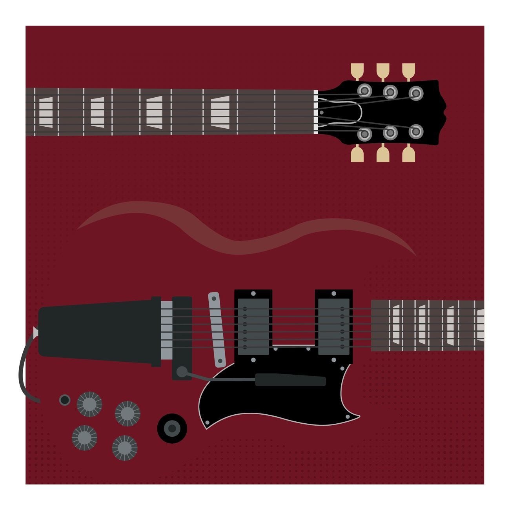
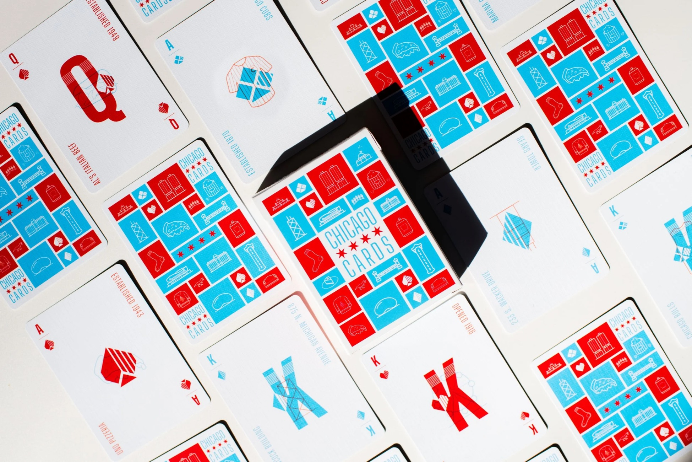
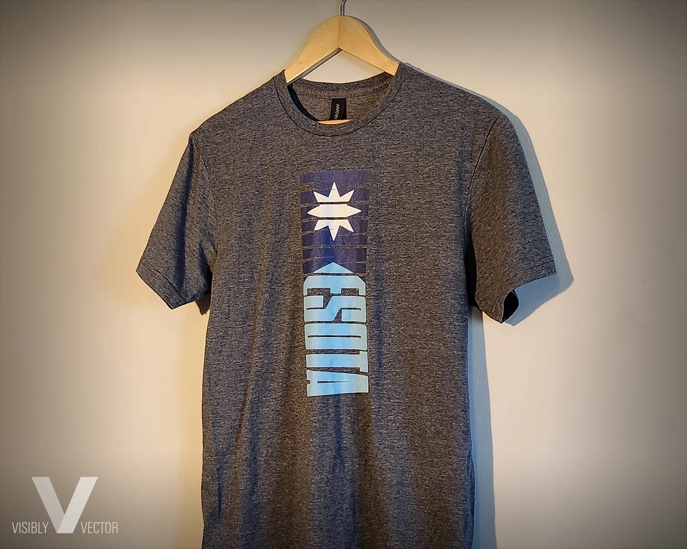

Pop-up in residence
Artist spotlight:
Visibly Vector Design
Vector illustration through pins, stickers, prints and playing cards.
Specializing in bold illustrations and clean graphic design, Visibly Vector creates small-batch vinyl stickers, enamel pins, art prints, and custom-illustrated playing cards. Blending modern vector aesthetics with nostalgic charm, the studio crafts tactile lifestyle goods designed to bring personality and storytelling to your everyday carry.
Featured in Metta through November 30th.